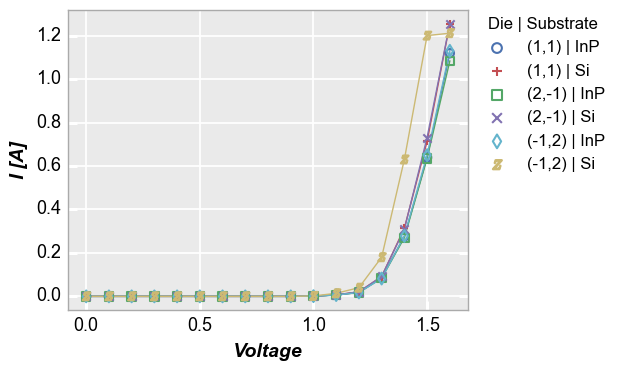

plot¶
- fcp.plot(**kwargs)¶
XY plot.
- Parameters
df (DataFrame) – DataFrame containing data to plot
- Keyword Arguments
x (str | list) – x-axis column name(s) [REQUIRED]
y (str | list) – y-axis column name(s) [REQUIRED]
LINES –
cmap (str) – Color map name (overrides all other color parameters). Defaults to None. Example: https://endangeredoxen.github.io/fivecentplots/0.5.0/styles.html#Colormap
line_alpha (str | list) – Transparency value for the line(s) between 0-1. Defaults to 1. Example: https://endangeredoxen.github.io/fivecentplots/0.5.0/styles.html#Line-styling
line_color (str | list) – Hex color string or list of hex color strings for the plot lines. Defaults to fcp.DEFAULT_COLORS. Example: https://endangeredoxen.github.io/fivecentplots/0.5.0/styles.html#Line- styling
line_style (str | list) – Matplotlib string character for line style {‘-‘; ‘–’; ‘-.’ ‘:’}. Defaults to ‘-‘. Example: https://endangeredoxen.github.io/fivecentplots/0.5.0/styles.html#Line-styling
line_width (int | list) – Line width in pixels. Defaults to 1. Example: https://endangeredoxen.github.io/fivecentplots/0.5.0/styles.html#Line-styling
lines (boolean) – Enable/disable plotting of lines. Defaults to True. Example: https://endangeredoxen.github.io/fivecentplots/0.5.0/plot.html#Scatter
MARKERS –
marker_edge_color (str | list) – Hex color string for the marker edges. Defaults to fcp.DEFAULT_COLORS. Example: https://endangeredoxen.github.io/fivecentplots/0.5.0/styles.html#Marker-colors
marker_edge_width (float) – Marker edge line width in pixels. Defaults to 1. Example: None
marker_fill (boolean) – Enable/disable color fill in markers. Defaults to False. Example: https://endangeredoxen.github.io/fivecentplots/0.5.0/styles.html#Marker-colors
marker_fill_color (str | list) – Hex color string for the fill color of markers. Defaults to fcp.DEFAULT_COLORS. Example: https://endangeredoxen.github.io/fivecentplots/0.5.0/styles.html#Marker-colors
jitter (marker_jitter |) – For boxplots add random noise on x-axis to show separation between markers. Defaults to True. Example: https://endangeredoxen.github.io/fivecentplots/0.5.0/boxplot.html#Jitter
marker_size (float) – Size in pixels of the data point markers. Defaults to 6. Example: None
markers (boolean) – Enable/disable data point markers. Defaults to True. Example: None
AX_[H|V]LINES –
ax_hlines|ax2_hlines (float|list of tuples and floats) – Add horizontal lines to the plot; if only float value is provided add a solid black line with width=1 pixel at that value; if tuple add any one or more of the following in order: [1] float value or DataFrame column name [required]; [2] hex string for line color; [3] line style str; [4] line width in pixels; [5] line alpha transparency value from 0-1; [6] legend text [added automatically if using a column name for value]. Defaults to None. Example: https://endangeredoxen.github.io/fivecentplots/0.5.0/plot.html#Horizontal-&-vertical- lines
ax_vlines|ax2_vlines (float|list of tuples and floats) – Add vertical lines to the plot [same parameters as ax_hlines]. Defaults to None. Example: https://endangeredoxen.github.io/fivecentplots/0.5.0/plot.html#Horizontal-&-vertical-lines
CONTROL_LIMITS –
control_limit_side (str) – Determines if shaded region is <= lcl and >= ucl {“outside”} or between the lcl and ucl {“inside”}. Defaults to outside. Example: https://endangeredoxen.github.io/fivecentplots/0.5.0/plot.html#Control-limits
lcl (float) – Float value to start the lower control limit shading region. Defaults to None. Example: https://endangeredoxen.github.io/fivecentplots/0.5.0/plot.html#Control-limits
ucl_edge_alpha (lcl |) – Transparency value for the line starting the control limit shaded region between 0-1. Defaults to 0.25. Example: None
ucl_edge_color (lcl |) – Hex color string for the the line starting the control limit shaded region. Defaults to fcp.DEFAULT_COLORS. Example: None
ucl_edge_style (lcl |) – Line style for the line starting the control limit shaded region {‘-’, ‘–’, ‘-.’, ‘:’}. Defaults to ‘-‘. Example: None
ucl_edge_width (lcl |) – Width of the line starting the control limit shaded region in pixels. Defaults to 1. Example: None
ucl_fill_alpha (lcl |) – Transparency value for the control limit shaded region fill between 0-1. Defaults to 0.20. Example: https://endangeredoxen.github.io/fivecentplots/0.5.0/plot.html#Control- limits
ucl_fill_color (lcl |) – Hex color string for the control limit shaded region fill. Defaults to fcp.DEFAULT_COLORS. Example: https://endangeredoxen.github.io/fivecentplots/0.5.0/plot.html#Control- limits
ucl (float) – Float value to start the upper control limit shading region. Defaults to None. Example: https://endangeredoxen.github.io/fivecentplots/0.5.0/plot.html#Control-limits
CONFIDENCE_INTERVALS –
conf_int (float) – Interval with upper and lower bounds based on a single confidence value between 0-1 (typical=0.95). Defaults to None. Example: https://endangeredoxen.github.io/fivecentplots/0.5.0/plot.html#Confidence-interval
nq_int_edge_alpha (conf_int | perc_int |) – Transparency value for the lines bounding the interval shaded region between 0-1. Defaults to 0.25. Example: https://endangeredoxen.github.io/fivecentplots/0.5.0/plot.html#Confidence-interval
nq_int_edge_color (conf_int | perc_int |) – Hex color string for the the lines bounding the interval shaded region. Defaults to fcp.DEFAULT_COLORS. Example: https://endangeredoxen.github.io/fivecentplots/0.5.0/plot.html#Confidence-interval
nq_int_edge_style (conf_int | perc_int |) – Line style for the lines bounding the interval shaded region {‘-’, ‘–’, ‘-.’, ‘:’}. Defaults to ‘-‘. Example: https://endangeredoxen.github.io/fivecentplots/0.5.0/plot.html#Confidence-interval
nq_int_edge_width (conf_int | perc_int |) – Width of the lines bounding the interval shaded region in pixels. Defaults to 1. Example: https://endangeredoxen.github.io/fivecentplots/0.5.0/plot.html#Confidence-interval
nq_int_fill_alpha (conf_int | perc_int |) – Transparency value for the interval shaded region fill between 0-1. Defaults to 0.20. Example: https://endangeredoxen.github.io/fivecentplots/0.5.0/plot.html#Confidence-interval
nq_int_fill_color (conf_int | perc_int |) – Hex color string for the interval shaded region fill. Defaults to fcp.DEFAULT_COLORS. Example: https://endangeredoxen.github.io/fivecentplots/0.5.0/plot.html#Confidence-interval
nq_int (list of float) – Interval with upper and lower bounds based on values of sigma (where the mean of a distribution is sigma=0). Defaults to None. Example: https://endangeredoxen.github.io/fivecentplots/0.5.0/plot.html#Confidence-interval
perc_int (list of float) – Interval with upper and lower bounds based on percentiles between 0-1. Defaults to None. Example: https://endangeredoxen.github.io/fivecentplots/0.5.0/plot.html#Confidence-interval
FIT –
fit (int) – Polynomial degree for the fit. Defaults to None. Example: https://endangeredoxen.github.io/fivecentplots/0.5.0/plot.html#Line-fit
fit_color (str) – Hex color string for the fit line. Defaults to #000000. Example: None
fit_eqn (boolean) – Display the fit equation on the plot. Defaults to False. Example: None
fit_font_size (float) – Font size of the fit eqn and rsq value. Defaults to 12. Example: None
fit_padding (int) – Padding in pixels from the top of the plot to the location of the fit eqn. Defaults to 10. Example: None
fit_range_x (list) – Compute the fit only over a given range of x-values. Defaults to None. Example: https://endangeredoxen.github.io/fivecentplots/0.5.0/plot.html#Curve-fitting
fit_range_y (list) – Compute the fit only over a given range of y-values. Defaults to None. Example: None
fit_rsq (boolean) – Display the rsq of the fit on the plot. Defaults to False. Example: None
REFERENCE_LINES –
ref_line (list | pd.Series) – The name of one or more columns in the DataFrame or a pandas Series with the same number of rows as the x column. Defaults to None. Example: https://endangeredoxen.github.io/fivecentplots/0.5.0/plot.html#Reference-line
ref_line_alpha (str | list) – Transparency value for the reference line(s) between 0-1 (use list if more than one ref_line plotted). Defaults to 1. Example: https://endangeredoxen.github.io/fivecentplots/0.5.0/plot.html#Reference-line
ref_line_color (str | list) – Hex color string or list of hex color strings for the reference line (use list if more than one ref_line plotted). Defaults to #000000. Example: https://endangeredoxen.github.io/fivecentplots/0.5.0/plot.html#Reference-line
ref_line_legend_text (str | list) – Custom string label(s) to add to a legend for the reference line data (use list if more than one ref_line plotted). Defaults to None. Example: https://endangeredoxen.github.io/fivecentplots/0.5.0/plot.html#Reference-line
ref_line_style (str | list) – Matplotlib string character for reference line style {‘-‘; ‘–’; ‘-.’ ‘:’} (use list if more than one ref_line plotted). Defaults to ‘-‘. Example: https://endangeredoxen.github.io/fivecentplots/0.5.0/plot.html#Reference-line
ref_line_width (int | list) – Reference line width in pixels (use list if more than one ref_line plotted). Defaults to 1. Example: https://endangeredoxen.github.io/fivecentplots/0.5.0/plot.html#Reference-line
STAT_LINES –
stat (str) – Calculate a statistic on a data set (any stat value supported by pandas.groupby is valid {‘mean’, ‘std’, etc}. Defaults to None. Example: https://endangeredoxen.github.io/fivecentplots/0.5.0/plot.html#Stat-lines
stat_line_xxx (various) – Stat-line styling is controlled by the regular line_xxx values. Defaults to None. Example: None
stat_val (str) – Alternate column name used as a pseudo x-axis for the stat calculation for cases in which the plotted x-column values are not perfectly aligned. Defaults to None. Example: https://endangeredoxen.github.io/fivecentplots/0.5.0/plot.html#Stat-lines
Examples
>>> import fivecentplots as fcp >>> from pathlib import Path >>> import pandas as pd >>> df = pd.read_csv(Path(fcp.__file__).parent / 'tests' / 'fake_data.csv') >>> fcp.plot(df, x='Voltage', y='I [A]', legend=['Die', 'Substrate'], ax_size=[400, 300], filter='Target Wavelength==450 & Temperature [C]==25 & Boost Level==0.2')
